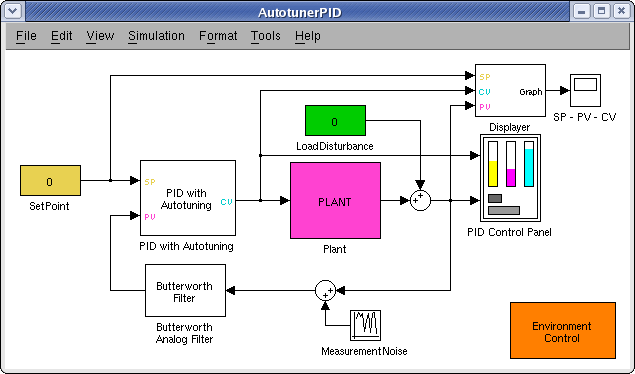
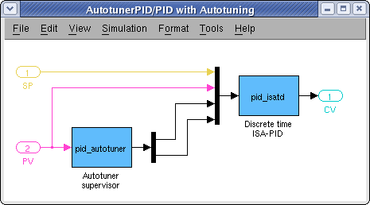
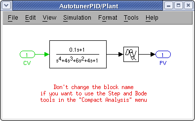

| AutotunerPID Toolkit | |
| Layout of the Control System | Overview of the control system simulated by the AutotunerPID Toolkit |
| Setting up the Simulation |
Summary of the most important steps to set up the initial condition for the simulation |
| PID Control Panel |
Description of the interface to control the PID behavior |
| Environment Panel |
Description of the interface to control the environment behavior |
Layout of the Control System
The AutotunerPID Toolkit simulates a single SISO control loop, which includes a PID with autotuner, the plant to be controlled, a lowpass filter and some auxiliary blocks to manage the simulation (for example change the set-point or perform the autotuning or include a measurement noise).
The main component of the Toolkit is the Simulink file autotunerPID.mdl
|  |
The following sections describe the role of each blocks in the model. You can view the general AutotunerPID Function reference in Function Reference.
| Note For more information about PID Autotuning, see Introduction to PID Autotuning. |
PID with Autotuning
The regulator is a subsystem composed by two S-functions: pid_isatd.m which implements a discrete time ISA-PID and pid_autotuner.m which takes in charge the autotuning process.
|  |
Discrete time ISA-PID (pid_isatd.m)
The discrete time ISA-PID includes the filter on the derivative action, the set-point weight (but not the weight of the derivative action which is fixed to c=0). Moreover the PID implements antiwindup on lower and higher saturation limits of the actuator and bumpless auto-manual switch. The structure of this "industrial PID" is more complex than the structure of the "scholastic PID" and it closely resemble the functioning of regulators used in practice.
Autotuner Supervisor (pid_autotuner.m)
The autotuner supervisor, instead, rules out the autotuning process mainly performing the identification of a FOPDT process model (idareas.m) or a set of characteristics (pid_autotuner.m) and the synthesis of the new parameters with the methods described (pid_tuning.m). Moreover it is possible to constrain the structure of the regulator to be a PI or a PID, or the structure can be automatically selected by the supervisor (pid_structure.m). In particular, the identification experiment includes both step response and relay response with tunable hysteresis and amplitude.
Plant
The plant is a subsystem which model the process that must be controlled
|  |
The structure of the plant has been left open by purpose. The user can thus include his own plant in the simulator since there is no constrain on it: the plant can be linear or nonlinear, continuous or discrete time and so on. However, the comparative analysis of a step responses and Bode diagrams is available only for linear plants (for obvious reasons).
| Note The comparative analysis is available only when the model is NOT running and for linear plants. Moreover the name of the blocks inside the Plant subsystem should not be changed since they are used as references in the functions performing this analysis |
PID Control Panel
The PID Control Panel is implemented through a masked S-function (autogui.m), which uses the graphical primitives of the MATLAB environment to create a GUI which has a close feeling to that of a real PID. The aim of this interface is to provide all the inputs and outputs typical of a real industrial PID.
Environment Panel
The Environment Panel is implemented through a masked S-function (envgui.m). It controls the parameter of the simulation which are not under direct control of the user, so that they cannot be included in the PID control panel. For example a measurement noise or a step on the load disturbance can be included.
Moreover, through the environment control panel, a comparative analysis of all the autotuning methods can be performed, both in time domain and in frequency domain.
Butterworth Analog Filter
The lowpass Butterworth analog filter in the control loop is used as an antialiasing filter and also to reduce the effects of the measurement noise. The order of the filter and the bandwidth can be set by the user (butterdesign.m).
Service Blocks
The remaining blocks are inserted just to have a fully functional environment.
| Note The GUIs control the value of the set-point, load disturbance and measurement noise through a reference to the name of the corresponding blocks. It is suggested that you DON'T change the name of this block. If you do this, you must also change the references in the masks of the block "PID Control Panel" and "Environment Panel" |
| | Synthesis methods | Setting up the Simulation | |